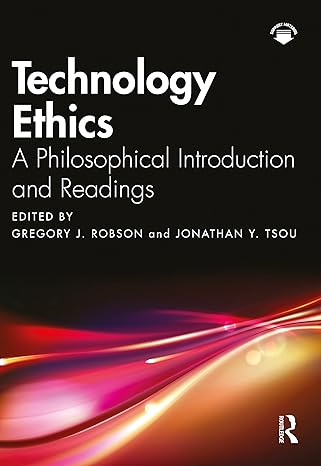
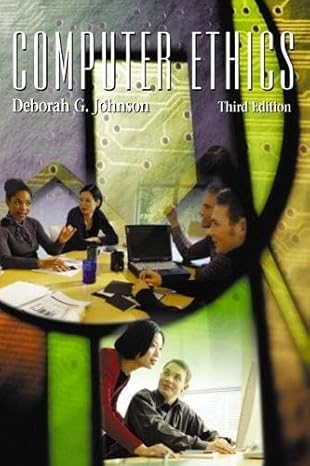
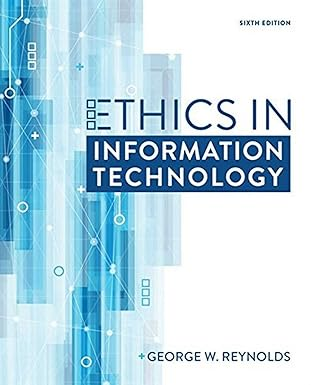

أخلاقيات في تفاعل الإنسان مع الحاسوب (HCI 2204)
القسم: هندسة البرمجيات | الكلية: الحاسبات
الساعات المعتمدة: 2 | المستوى: السنة الثانية / المستوى الرابع
الوصف العام للمقرر
يفحص هذا المقرر الاعتبارات الأخلاقية التي تنشأ في التفاعل بين الإنسان والحاسوب، مع التركيز على المبادئ الأخلاقية، والخصوصية، والملكية الفكرية، والمسؤوليات الاجتماعية. سيقوم الطلاب بتحليل المعضلات والأطر الأخلاقية، واستكشاف الشمولية وإمكانية الوصول، وتقييم التأثيرات المجتمعية لممارسات التفاعل والتقنيات الناشئة.
مخرجات تعلم المقرر
| الرمز | مخرجات التعلم | استراتيجيات التدريس | طرق التقييم |
|---|---|---|---|
| 1.1 | شرح الأطر الأخلاقية والقانونية والاجتماعية ذات الصلة، بما في ذلك الخصوصية وحماية البيانات. | مناقشات، دراسات حالة | واجبات / اختبارات قصيرة / اختبارات |
| 2.1 | توصيل التحليلات الأخلاقية بفعالية من خلال دراسات الحالة والمناقشات المهنية. | مناقشات، عروض عملية | واجبات / مشروع بحثي |
| 3.1 | إظهار الحكم المستنير والتمسك بالمبادئ الأخلاقية المهنية في ممارسات المجال. | دراسات حالة، مناقشات | مشروع بحثي / اختبارات |
مواضيع المقرر
- مقدمة في الأخلاقيات في التفاعل بين الإنسان والحاسوب
- الأطر والنظريات الأخلاقية
- الخصوصية والأمن والحريات المدنية
- الملكية الفكرية وأخلاقيات البرمجيات
- الآثار الاجتماعية للحوسبة
- الشمولية وإمكانية الوصول والسياقات الثقافية
- المسؤولية المهنية
- التقنيات الناشئة والتحديات الأخلاقية
- دراسات حالة في الأخلاقيات
- البحث والتجريب الأخلاقي
تقييم الطلاب
| أنشطة التقييم | التوقيت (بالأسبوع) | النسبة المئوية (%) |
|---|---|---|
| الاختبارات القصيرة | 3 - 14 | 10% |
| الواجبات | 3 - 14 | 10% |
| مشروع بحثي | 15 | 20% |
| اختبار نصفي | 7 - 8 | 20% |
| اختبار نهائي | 16 - 17 | 40% |
References


Computer Ethics – Deborah G. Johnson